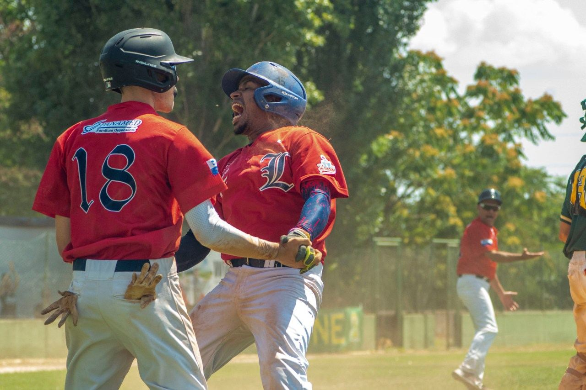
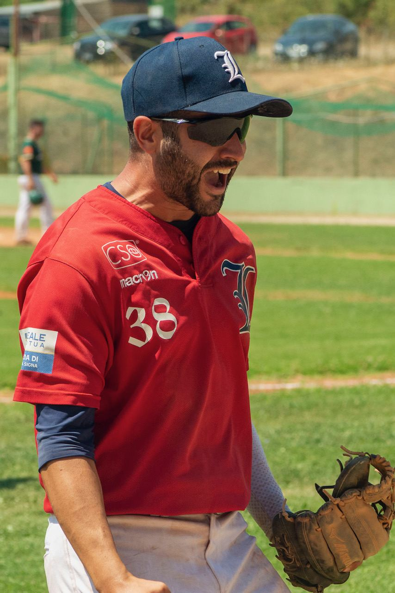
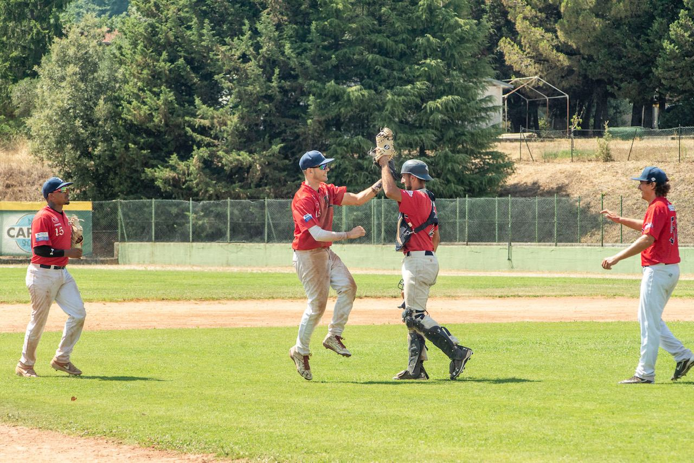

La nostra prima, storica, vittoria in Serie A2 è finalmente arrivata.
Finalmente perché sono trascorse due giornate per un totale di quattro sconfitte consecutive, difficili da digerire per una formazione che arrivava da una promozione.
Un’incredibile cavalcata quella del 2019 che ha portata ad un successo meritato sul campo; 21 vittorie in campionato (a fronte di 6 sconfitte) ed una striscia di 6 vittorie ai playoff (0 sconfitte).
Poi, il freddo inverno.
La squadra che perdeva elementi importanti ma la società, grazie ad un ottimo lavoro di backoffice, che ne confermava di nuovi altrettanto validi.
Un ottimo lavoro di preparazione diviso tra palestra e lavoro sul campo, con il termometro che man mano scendeva vicino allo zero.
Poi la primavera che si avvicinava ma portava con sé la maledetta pandemia.
La squadra ha resistito ed ha continuato, nei limiti delle possibilità, ad allenarsi e a rimanere compatta come gruppo, il tutto virtualmente.
Il gruppo, il nostro valore aggiunto e la nostra forza.
Poi la fine della quarantena e pian piano l’attività che ripartiva e si andava delineando anche un calendario.

La società che fa i conti con quello che c’è e di conseguenza quello che può fare.
A malincuore rinunciamo a gli innesti provenienti da oltre oceano ma la squadra, seppur corta e rimaneggiata c’è e lo si vede dalle prime partite amichevoli con la Fiorentina.
Arriva il fatidico esordio contro Paternò, una bella partita che termina 5 a 3 a favore dei siciliani che fanno valere la loro esperienza nella categoria.
La seconda partita è una sconfitta più ampia, con il classico inning che “ammazza” la partita.
Gli incontri con il Jolly Roger Grosseto, invece, sono la conferma che il gruppo e la voglia di far bene ci sono: due sconfitte di misura, 4-3 e 3-0 contro due lanciatori esperti e con belle giocate in difesa e solidità sul monte.
L’attacco resta il punto debole dei lastrigiani, alcuni giocatori del lineup faticano a trovare continuità nonostante il lavoro fatto durante la settimana; le qualità dei nostri ragazzi non sono in dubbio e resta alto il morale dello staff tecnico e della società.
Domenica scorsa la prima trasferta, il ritorno sul campo del Montefiascone, nostro avversario nella serie finale dei playoff terminata 3 partite a 0 a nostro favore.
Per il ripescaggio nella categoria, la squadra laziale, ha messo su un’ottima squadra con innesti di categoria superiore che vanno ad aggiungersi ad un lineup già di qualità.
Ma c’è voglia di riscatto tra i Lancers e finalmente, dopo una bella lotta sul campo, arriva la tanto desiderata vittoria per 7-3.

Questa volta oltre ad un’ottima difesa ed un monte che fa un lavoro eccezionale si sblocca anche l’attacco (10 valide colpite); la squadra avversaria può fare ben poco per recuperare lo svantaggio se non tentare di innervosire i lastrigiani.
La partita termina con un out al volo di Maor, un revival di gara 2 delle finali 2019: meno scenografico ma comunque efficace.
L’obiettivo di questa stagione resta quello della crescita dei singoli, del gruppo e di tutto l’ambiente Lancers come struttura organizzata ed efficiente.
Prossimo impegno domenica 23 Agosto contro la corazzata Nettuno sul Lancers Field che si presenterà rinnovata grazie al lavoro che in questi giorni si sta completando sul campo interno.